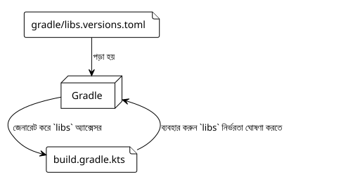

অনুচ্ছেদ ৫ : শেয়ারড লাইবস.ভারশনস.টমলের এডভেঞ্চার
Publié le 27 September 2025
লক্ষ্যীয় পাঠক : গ্রেডল ডেভেলপাররা মাল্টি-বিল্ড প্রকল্পে নির্ভরতা ব্যবস্থাপনার চ্যালেঞ্জের সম্মুখীন
ভূমিকা
আমাদের প্লাগইন তৈরি করার মিশনে`site-baker`, আমরা পরিষ্কার ও কেন্দ্রীয় কোড বেস বজায় রাখার প্রচেষ্তা করেছি। আধুনিক Gradle ইকোসিস্টেমের সবচেয়ে ভালো অনুশীলনগুলির মধ্যে একটি হল এর ব্যবহার দেসংস্করণের ক্যাটালগ(libs.versions.toml) নির্ভরতা পরিচালনা করতে. কিন্তু আপনার প্রকল্প আরও জটিল হয়, তখন কী হয়, যেমন একটিনির্মাণ কম্পোজিটএকটি স্বতন্ত্র বিল্ড (আমাদের প্লাগইন)কে অন্য একটি বিল্ডের অন্তর্ভুক্ত করা উচিত ?
এখানে আমাদের অভিযান একটি অপ্রত্যাশিত মোড় নিয়েছিল। আমরা চাইতাম যে আমাদের প্লাগইন`site-baker`, যা নিজেই একটি Gradle প্রকল্প, আমাদের প্রধান প্রকল্পের মতোই সংস্করণ ক্যাটালগ ব্যবহার করে। এই লেখা, আমাদের সিরির পঞ্চমটি, কীভাবে আমরা এই চ্যালেঞ্জটি সমাধান করেছি তা বলছে।
ভার্সন ক্যাটালগ (libs.versions.toml) : একটি স্মরণ
ফাইল`gradle/libs.versions.toml`এটি Gradle-এর একটি বৈশিষ্ট্য যা আপনার প্রজেক্টের নির্ভরতাগুলির সংস্করণ ও স্থানাঙ্ককে কেন্দ্রিককরণ করার অনুমতি দেয়। এটি সাধারণত চারটি বিভাগে গঠিত:
-
[versions]: নির্ধারণ করে অ্যালাসগুলো সংস্করণের নম্বরগুলির জন্য (উদাহরণ:`kotlin = "1.9.20"`) -
[libraries]: অ্যালিয়াসগুলো সংজ্ঞায়িত করে_complete নির্ভরতাগুলোর জন্য, উপরে সংজ্ঞায়িত সংস্করণগুলো ব্যবহার করে (উদাহরণ:`kotlin-stdlib = { module = "org.jetbrains.kotlin:kotlin-stdlib", version.ref = "kotlin" }`) -
[bundles]`একাধিক লাইব্রের리를 একটি অ্যালিয়াসের অধীনে একত্র করে (উদাহরণ:`jackson = ["jackson-core", "jackson-databind"]). -
`[plugins]`Gradle প্লাগনের জন্য এলিয়াস সেট করে।
একবার সংজ্ঞায়িত হলে, Gradle স্বয়ংক্রিয়ভাবে টাইপকৃত অ্যাক্সেসর তৈরি করে, যা আপনার`build.gradle.kts`বেশ বেশি পঠনযোগ্য :
dependencies {
// Au lieu de : implementation("org.jetbrains.kotlin:kotlin-stdlib:1.9.20")
implementation(libs.kotlin.stdlib)
}
2. সমস্যা: একটি কম্পোজিট বিল্ড এবং দুটি পৃথক বিশ্ব
আমাদের প্রকল্পের কাঠামো একটিসম্পলিত নির্মাণ. প্রধান প্রকল্প (thymeleaf.cheroliv.com) প্লাগইন প্রকল্পটি অন্তর্ভুক্ত করে (site-baker) কমান্ডের মাধ্যমে`includeBuild("site-baker")ফাইলে`settings.gradle.kts.
সমস্যা হল যে, ডিফল্টভাবে, একটি অন্তর্ভুক্ত বিল্ড একটিবিশ্ব বিচ্ছিন্ন. এইটির নিজস্ব কনফিগারেশন, এর নিজস্ব জীবনচক্র, এবং এটি ফাইলটি দেখে না`libs.versions.toml`প্রধান বিল্ডের। আমাদের`plugin/build.gradle.kts`ব্যবহার করার চেষ্টা করছিল`libs.plugins.kotlin.jvm`, কিন্তু বস্তু`libs`এটি সঠিক টমএল ফাইল exports na howar karone, bilder̥ṭi ghoṭloe
3. সমাধান : অপbорności সমাধানের বিতরণ
বহুতো গবেষণা করার পর, সমাধানটি একটি Gradle বৈশিষ্ট্য হয়ে উঠেছে যা এই ক্ষেত্রের জন্য সঠিকভাবে ডিজাইন করা হয়েছে।dependencyResolutionManagement.
ফাইলে`settings.gradle.kts` du অন্তর্ভুক্ত নির্মাণ(site-baker/settings.gradle.kts), আমরা Gradle-কে বলতে পারি যে সংস্করণ ক্যাটালগটি ব্যবহার করার জন্য খুঁজে বের করতে কোথায়।
এটি হলো আমাদের যোগ করা কনফিগারেশন`site-baker/settings.gradle.kts` :
// site-baker/settings.gradle.kts
dependencyResolutionManagement {
repositoriesMode.set(RepositoriesMode.FAIL_ON_PROJECT_REPOS)
repositories {
gradlePluginPortal()
mavenCentral()
}
versionCatalogs {
create("libs") {
from(files("../gradle/libs.versions.toml"))
}
}
}
rootProject.name = "site-baker"
include("plugin")বিশ্লেষণ করি গুরুত্বপূর্ণ অংশটি :
versionCatalogs {
create("libs") { // Crée un catalogue nommé 'libs'
from(files("../gradle/libs.versions.toml")) // En utilisant ce fichier
}
}-
create("libs")`আমরা একটি সংস্করণ ক্যাটালগ ঘোষণা করি যা অ্যালিয়াসের মাধ্যমে অ্যাক্সেসযোগ্য হবে`libs. -
from(files("../gradle/libs.versions.toml"))`এটি জাদু। আমরা গ্রেডলকে বলি যে এই ক্যাটালগের উৎসটি ডিরেক্টরিতে অবস্থিত TOML ফাইল।`gradledu পিতামাতা প্রকল্প(../).
এই কনফিগারেশনের সাথে, বিল্ড`site-baker`এখন জানে যে মূল প্রকল্পের সংস্করণ ক্যাটালগ ব্যবহার করতে হবে। বস্তু`libs`সঠিকভাবে তৈরি করা হয়েছে, এবং নির্ভরতাগুলি প্রত্যাশিত মতো সমাধান করা হয়েছে।
4. নিষ্কর্ষ: ভালোভাবে পরিচালিত কম্পোজিট বিল্ডের শক্তি
অনुभবটি শিক্ষামূলক ছিল। সংস্করণের ক্যাটালগ একটি দৃঢ়তাবদ্ধ রক্ষণযোগ্যতার জন্য একটি ফ্যানটাস্টিক টুল, কিন্তু কম্পোজিট বিল্ডের সিনেরিয়োতে এর আচরণ সর্বদা সহজ নয়।
কীটি হল মনে রাখতে হচ্ছে যে একটি অন্তর্ভুক্ত বিল্ড হলেও একটি স্বতন্ত্র বিল্ড। ভার্সন ক্যাটালগের মতো কনফিগারেশন শেয়ার করতে, আপনাকে Gradle द्वारा সরবরাহকৃত একস্পষ্ট মেকানিজম ব্যবহার করতে হবে, যেমন ব্লক।`dependencyResolutionManagement`midpoint? Actually I wrote " midline"? Let’s ensure correct: "মধ্যে". So result: " মধ্যে". That includes a leading space then the Bengali word.
Return that.
</think>
মধ্যে`settings.gradle.kts`.
এই সমস্যাটি সমাধান করে, আমরা শুধুমাত্র আমাদের বিল্ডকে পরিষ্কার করলাম না, বরং আমাদের প্রকলের সামঞ্জস্যকে বাড়িয়ালাম; আমরা নিশ্চিত করে যে প্লাগইন এবং প্রধান প্রকল্প একক সত্যের উৎস শেয়ার করে তাদের নির্ভরতাগুলির জন্য।
আসন্ন নিবন্ধে, আমরা আমাদের প্লগইনকে আরও জটিল কাজ যোগ করে সমৃদ্ধ করবো, যেহেতু আমাদের নির্ভরশীলতা ব্যবস্থা দৃঢ় ও কেন্দ্রীয়।